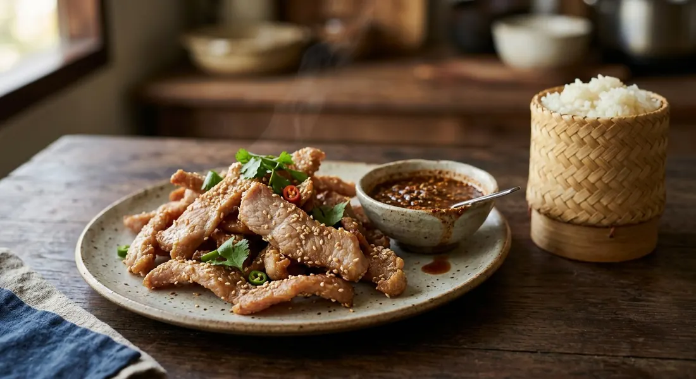

Pork strips marinated and dried for one day of sun, then fried until crisp outside and chewy inside — the Isaan classic that turns sun and salt into provisions, served with sticky rice and jaew.

หมูแดดเดียว translates as one-sun pork, and the name is the recipe: strips of pork are marinated, laid out on a bamboo tray or rack, and given a single day of sun before they meet the wok. TrueID's version is explicit that this is food preservation first — drying the meat extends its life, the same logic as the region's fermented sausages and dried beef. A Bloggang home cook calls the finished strips เสบียง, provisions, and กับแกล้ม, drinking food — a batch made on a sunny day keeps for weeks and feeds the house one fried handful at a time.
The build is two-stage, and the stages do opposite jobs. The marinade — fish sauce, oyster sauce or soy, garlic, coriander root, pepper, sugar — works into the meat over a couple of hours. The drying then pulls moisture back out of the surface, so the strips fry crisp instead of steaming. Thai cooks are precise about the endpoint: หมาด ๆ, semi-dry. Bloggang's warning is the rule — dry them too far and the meat goes hard, which is why this is not jerky.
Then the fry. Every source insists on the same two details: enough oil to cover the strips, and constant stirring — the sugar in the marinade burns in the blink of an eye if the pan is left alone. The reward is the texture the dish is famous for: a crisp, caramelised outside giving way to a chewy, salty-sweet centre, eaten with warm sticky rice and a jaew dip of lime, fish sauce, chilli and toasted rice powder.
| Thai | English | Amount |
|---|---|---|
| เนื้อหมูสันคอ | Pork collar | 1 kg |
| กระเทียม | Garlic | 8 cloves |
| รากผักชี | Coriander roots | 6 |
| ซอสหอยนางรม | Oyster sauce | 2 tbsp |
| น้ำปลา | Fish sauce | 2 tbsp |
| น้ำตาล | Sugar | 2 tsp |
| พริกไทย | Pepper | 2 tsp |
| งาขาว | White sesame seeds | 2 tbsp |
| น้ำมันสำหรับทอด | Oil, for deep-frying |
The sun-dried batch (Kapook): 1 kg collar strips in a sweeter sauce — ¼ cup sugar, 2 tbsp evaporated milk, 1 tbsp oil, 1 tbsp seasoning sauce, ¼ cup light soy, 3 tbsp oyster sauce and sesame — rested 2 hours, sun-dried until semi-dry, then frozen in batches and fried to order. The salty plate (TrueID, กินได้อร่อยด้วย): 1 kg haunch cut along the grain, coarse-pounded peppercorns and garlic, a full tablespoon of salt and one of sugar massaged in for 5 minutes, one hour of strong sun per side, fried with constant stirring — with its jaew: lime, fish sauce, a pinch of sugar, chilli flakes and toasted rice powder over sliced shallots, sawtooth coriander and spring onion. The minimalist plate (Bloggang): 800 g haunch, ½ tbsp flower salt, 2–3 tbsp fish sauce, 2 tbsp palm sugar and a little rice bran oil massaged in — rest an hour, two hours of sun under a white cloth, fry in medium-hot oil, stirring non-stop.
Sun or oven — and what temperature. Wongnai's recipe is proudly sun-free (50°C, 3 hours). Kapook offers both; its oven version runs 80°C for 4 hours. Pitchameat suggests 100°C for 2 hours. EcoGo's Kapook recipe splits the difference: sun first, then a 70–120°C oven finish. Four sources, four oven temperatures.
The cut. Collar (Wongnai, Kapook's main recipe, Pitchameat) versus haunch or leg (TrueID, Bloggang). EcoGo insists on คอหมู, the fatty neck used for grilled pork neck, marinated with pineapple juice for tenderness. Pitchameat shrugs: collar, shoulder or haunch, as long as it carries some fat.
How sweet. Kapook's selling recipe is heavily sweet — ¼ cup of sugar plus evaporated milk. Bloggang warns in the other direction: don't over-sweeten, it burns the moment it hits the oil. TrueID goes nearly savoury: a single tablespoon of sugar against a full tablespoon of salt. Palm sugar in Bloggang and มอแกนน้อย's Pantip recipe, white sugar elsewhere.
The seasoning base. Wongnai and Bloggang build on fish sauce; TrueID on salt, pepper and garlic with no sauce at all; Kapook's oven version and Pitchameat on soy and oyster sauce. The ancient-style marinade (garlic, coriander root, soy, sugar, pepper) is Pitchameat's baseline, and it also lists herbal (galangal, lemongrass, kaffir leaves) and sesame-crusted variants.
How dry is dry. TrueID dries only until the surface tightens — one strong-sun hour per side. Bloggang gives it about two hours and warns that bone-dry means hard meat. มอแกนน้อย's Pantip recipe says the name literally: แค่แดดเดียว, one sun only, semi-dry is enough. Weak sun? EcoGo leaves the tray out all day and, if it's still damp by evening, finishes it with a hair-dryer.
This recipe is translated from the following Thai-language sources. Where they disagree, we've said so.
1. Wongnai — "แจกสูตรฟรี 'หมูแดดเดียว' เมนูหมูสูตรเด็ดไม่ง้อแดด ทำง่ายขายคล่อง!" (the recipe used here) — wongnai.com
2. Kapook — "5 วิธีทำหมูแดดเดียว เนื้อนุ่มทำเองได้อร่อยไม่ง้อร้าน" (the sun-dried batch, the oven version, the pineapple kho-moo and the one-sun recipes) — cooking.kapook.com
3. TrueID Food — "สูตรอาหาร หมูแดดเดียว อร่อยนุ่ม เก็บไว้กินได้นาน! พร้อมสูตรน้ำจิ้มแจ่วรสเด็ด!" by กินได้อร่อยด้วย (the salty plate, the with-the-grain cut and the jaew) — food.trueid.net
4. Pitcha Meat — "4 สูตรหมูแดดเดียว ทำง่าย อร่อยเด็ด เนื้อนุ่ม เก็บไว้ได้นาน" (the butcher's cuts, the four marinade styles and the storage times) — pitchameat.com
5. Bloggang — "Food For Fun :: Hot Wok Return #46 :: Cook at Home 'หมูแดดเดียว'" by คุณ nernnam (the minimalist plate, the white cloth and the burning warning) — bloggang.com